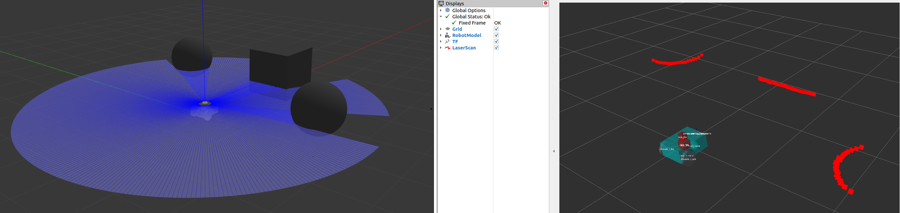
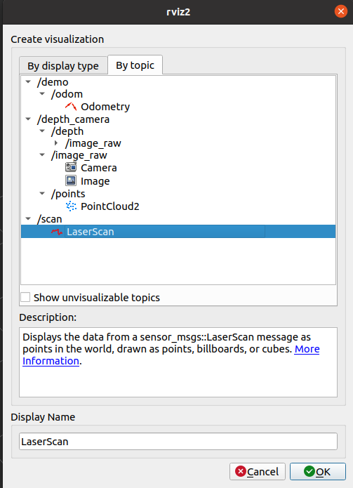
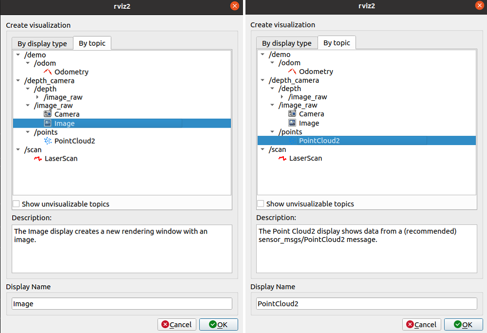
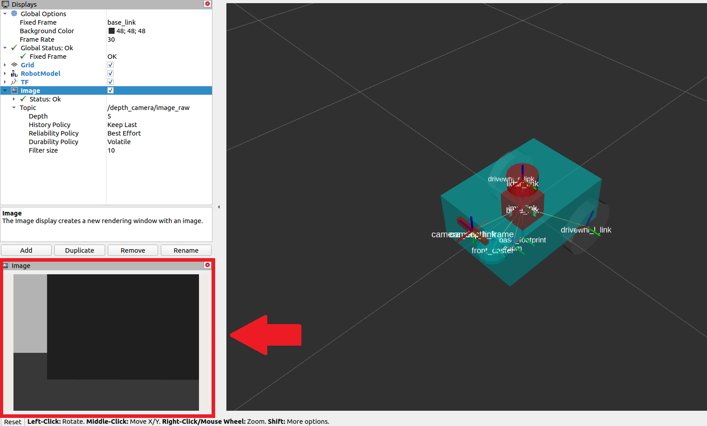
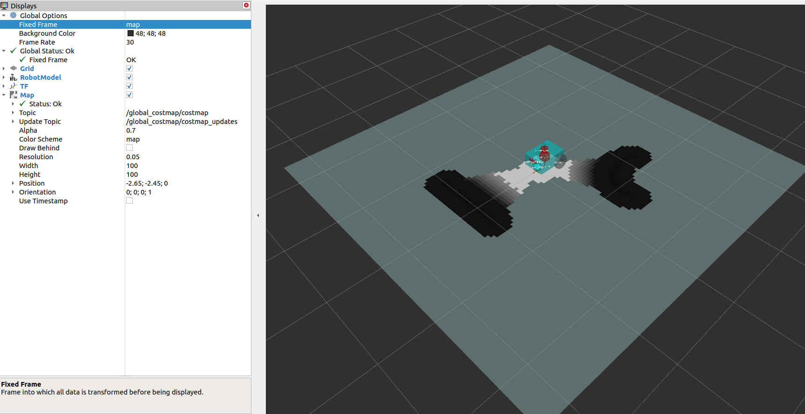
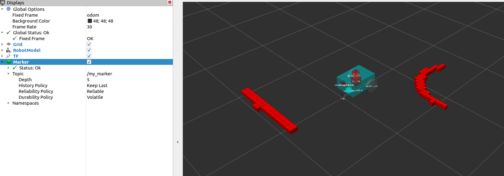

设置传感器
在本指南中，我们将讨论传感器在安全导航机器人中的重要性以及如何在Nav2中设置传感器。在本教程的前半部分，我们将简要介绍Nav2中常用的传感器和常见的传感器消息。接下来，我们将在先前构建的仿真机器人``sam_bot``上添加基本的传感器设置。最后，我们将通过在RViz中可视化它们来验证``sam_bot``的模拟传感器消息。
一旦在机器人上设置了传感器，它们的读数可以用于地图创建、定位和感知任务。在本指南的后半部分，我们首先讨论了地图创建和定位如何使用传感器数据。然后，我们还将介绍 Nav2 的一个软件包 nav2_costmap_2d，该软件包生成的代价图最终将用于 Nav2 的路径规划。我们将设置该软件包的基本配置参数，以便它能正确地接收来自 sam_bot 的传感器信息。最后，我们在 RViz 中可视化生成的代价图，以验证其接收到的数据。
传感器介绍
移动机器人配备了许多传感器，使其能够观察和感知环境。这些传感器获取的信息可以用于构建和维护环境地图，将机器人定位在地图上，并查看环境中的障碍物。这些任务对于能够在动态环境中安全、高效地导航机器人非常重要。
常用传感器的示例包括激光雷达、雷达、RGB相机、深度相机、IMU和GPS。为了标准化这些传感器的消息格式并方便不同厂商之间的互操作，ROS提供了``sensor_msgs``包，定义了常用的传感器接口。这也使用户可以使用任何遵循``sensor_msgs``标准格式的传感器供应商。在下一小节中，我们介绍了导航中常用的一些消息，即``sensor_msgs/LaserScan``、sensor_msgs/PointCloud2、sensor_msgs/Range``和``sensor_msgs/Image。
除了 sensor_msgs 软件包，还有一些标准接口需要您了解，例如 radar_msgs 和 vision_msgs。radar_msgs 定义了用于雷达特定传感器的消息，而 vision_msgs 软件包定义了计算机视觉中使用的消息，例如目标检测、分割和其他机器学习模型。该软件包支持的消息类型包括 vision_msgs/Classification2D、vision_msgs/Classification3D、vision_msgs/Detection2D 和 vision_msgs/Detection3D，等等。
参见
有关更多信息，请参阅`sensor_msgs <http://wiki.ros.org/sensor_msgs>`_、`radar_msgs <http://wiki.ros.org/radar_msgs>`_和`vision_msgs <http://wiki.ros.org/vision_msgs>`_的API文档。
您的物理机器人的传感器可能已经为它们编写了 ROS 驱动程序（例如连接到传感器的 ROS 节点，将数据填充到消息中，并将其发布供机器人使用），这些驱动程序遵循 sensor_msgs 软件包中的标准接口。sensor_msgs 软件包使您能够轻松地使用来自不同制造商的许多不同传感器。然后，像 Nav2 这样的通用软件包可以读取这些标准化的消息，并执行与传感器硬件无关的任务。在诸如 sam_bot 的仿真机器人上，Gazebo 还具有传感器插件，这些插件也会按照 sensor_msgs 软件包发布它们的信息。
常用传感器消息
在本小节中，我们讨论了在设置 Nav2 时可能遇到的一些常见类型的 sensor_msgs。我们将为每个传感器提供简要描述，在 Gazebo 中模拟其图像以及在 RViz 中对传感器
注解
除了下面列出的类型之外，还有其他类型的``sensor_msgs``。完整的消息列表及其定义可以在 sensor_msgs 文档 中找到。
sensor_msgs/LaserScan
这个消息表示来自平面激光测距仪的单个扫描。这个消息在``slam_toolbox``和``nav2_amcl``中用于定位和建图，或在``nav2_costmap_2d``中用于感知。



使用Gazebo模拟传感器
为了让您更好地了解如何在模拟机器人上设置传感器，我们将在之前的教程基础上为我们的模拟机器人``sam_bot``添加传感器。与之前的教程类似，在``sam_bot``上使用Gazebo插件添加里程计传感器，我们将使用Gazebo插件来模拟``sam_bot``上的激光雷达传感器和深度相机。如果您正在使用实际机器人，设置URDF框架时仍然需要执行大部分这些步骤，而且添加Gazebo插件以备将来使用也是有好处的。
为了能够跟随本节的其余部分，请确保您已正确安装了Gazebo。您可以按照先前教程中的“设置和先决条件 <https://navigation.ros.org/setup_guides/odom/setup_odom.html#setup-and-prerequisites>`_的说明来设置Gazebo。
向 URDF 添加 Gazebo 插件
首先让我们为``sam_bot``添加一个激光雷达传感器。打开URDF文件 src/description/sam_bot_description.urdf，并将以下行粘贴到``</robot>``标记之前。
251<link name="lidar_link">
252 <inertial>
253 <origin xyz="0 0 0" rpy="0 0 0"/>
254 <mass value="0.125"/>
255 <inertia ixx="0.001" ixy="0" ixz="0" iyy="0.001" iyz="0" izz="0.001" />
256 </inertial>
257
258 <collision>
259 <origin xyz="0 0 0" rpy="0 0 0"/>
260 <geometry>
261 <cylinder radius="0.0508" length="0.055"/>
262 </geometry>
263 </collision>
264
265 <visual>
266 <origin xyz="0 0 0" rpy="0 0 0"/>
267 <geometry>
268 <cylinder radius="0.0508" length="0.055"/>
269 </geometry>
270 </visual>
271</link>
272
273<joint name="lidar_joint" type="fixed">
274 <parent link="base_link"/>
275 <child link="lidar_link"/>
276 <origin xyz="0 0 0.12" rpy="0 0 0"/>
277</joint>
278
279<gazebo reference="lidar_link">
280 <sensor name="lidar" type="ray">
281 <always_on>true</always_on>
282 <visualize>true</visualize>
283 <update_rate>5</update_rate>
284 <ray>
285 <scan>
286 <horizontal>
287 <samples>360</samples>
288 <resolution>1.000000</resolution>
289 <min_angle>0.000000</min_angle>
290 <max_angle>6.280000</max_angle>
291 </horizontal>
292 </scan>
293 <range>
294 <min>0.120000</min>
295 <max>3.5</max>
296 <resolution>0.015000</resolution>
297 </range>
298 <noise>
299 <type>gaussian</type>
300 <mean>0.0</mean>
301 <stddev>0.01</stddev>
302 </noise>
303 </ray>
304 <plugin name="scan" filename="libgazebo_ros_ray_sensor.so">
305 <ros>
306 <remapping>~/out:=scan</remapping>
307 </ros>
308 <output_type>sensor_msgs/LaserScan</output_type>
309 <frame_name>lidar_link</frame_name>
310 </plugin>
311 </sensor>
312</gazebo>
在上面的代码片段中，我们创建了一个名为``lidar_link``的链接，它将被``gazebo_ros_ray_sensor``插件引用为附加传感器的位置。我们还设置了模拟激光雷达的扫描和范围属性的值。最后，我们将``/scan``设置为它将发布``sensor_msgs/LaserScan``消息的主题。
接下来，让我们给``sam_bot``添加一个深度摄像头。在激光雷达传感器的``</gazebo>``标签之后，粘贴以下几行代码。
314<link name="camera_link">
315 <visual>
316 <origin xyz="0 0 0" rpy="0 0 0"/>
317 <geometry>
318 <box size="0.015 0.130 0.022"/>
319 </geometry>
320 </visual>
321
322 <collision>
323 <origin xyz="0 0 0" rpy="0 0 0"/>
324 <geometry>
325 <box size="0.015 0.130 0.022"/>
326 </geometry>
327 </collision>
328
329 <inertial>
330 <origin xyz="0 0 0" rpy="0 0 0"/>
331 <mass value="0.035"/>
332 <inertia ixx="0.001" ixy="0" ixz="0" iyy="0.001" iyz="0" izz="0.001" />
333 </inertial>
334</link>
335
336<joint name="camera_joint" type="fixed">
337 <parent link="base_link"/>
338 <child link="camera_link"/>
339 <origin xyz="0.215 0 0.05" rpy="0 0 0"/>
340</joint>
341
342<link name="camera_depth_frame"/>
343
344<joint name="camera_depth_joint" type="fixed">
345 <origin xyz="0 0 0" rpy="${-pi/2} 0 ${-pi/2}"/>
346 <parent link="camera_link"/>
347 <child link="camera_depth_frame"/>
348</joint>
349
350<gazebo reference="camera_link">
351 <sensor name="depth_camera" type="depth">
352 <visualize>true</visualize>
353 <update_rate>30.0</update_rate>
354 <camera name="camera">
355 <horizontal_fov>1.047198</horizontal_fov>
356 <image>
357 <width>640</width>
358 <height>480</height>
359 <format>R8G8B8</format>
360 </image>
361 <clip>
362 <near>0.05</near>
363 <far>3</far>
364 </clip>
365 </camera>
366 <plugin name="depth_camera_controller" filename="libgazebo_ros_camera.so">
367 <baseline>0.2</baseline>
368 <alwaysOn>true</alwaysOn>
369 <updateRate>0.0</updateRate>
370 <frame_name>camera_depth_frame</frame_name>
371 <pointCloudCutoff>0.5</pointCloudCutoff>
372 <pointCloudCutoffMax>3.0</pointCloudCutoffMax>
373 <distortionK1>0</distortionK1>
374 <distortionK2>0</distortionK2>
375 <distortionK3>0</distortionK3>
376 <distortionT1>0</distortionT1>
377 <distortionT2>0</distortionT2>
378 <CxPrime>0</CxPrime>
379 <Cx>0</Cx>
380 <Cy>0</Cy>
381 <focalLength>0</focalLength>
382 <hackBaseline>0</hackBaseline>
383 </plugin>
384 </sensor>
385</gazebo>
与激光雷达传感器类似，我们创建``camera_link``，它将被``gazebo_ros_camera``插件引用作为传感器的连接位置。我们还创建一个``camera_depth_frame``，将其附加到``camera_link``上，并将其设置为深度相机插件的``<frame_name>``。我们还配置插件，使其分别将``sensor_msgs/Image``和``sensor_msgs/PointCloud2``消息发布到``/depth_camera/image_raw``和``/depth_camera/points``主题。最后，我们还为深度相机设置了其他基本配置属性。
启动和构建文件
为了验证传感器是否正确设置，并且能够在我们的环境中看到物体，让我们在带有物体的 Gazebo 世界中启动``sam_bot``。我们创建一个 Gazebo 世界，里面有一个立方体和一个球体，它们在``sam_bot``的传感器范围内，这样我们可以验证它是否能够正确地看到这些物体。
要创建世界，首先在项目的根目录下创建一个名为``world``的目录，并在``world``文件夹中创建一个名为``my_world.sdf``的文件。然后复制 world/my_world.sdf 的内容，并将其粘贴到``my_world.sdf``中。
现在，让我们编辑我们的启动文件 launch/display.launch.py，以启动包含我们刚刚创建的世界的 Gazebo。首先，在``generate_launch_description()``中添加``my_world.sdf``的路径，添加以下几行代码：
world_path=os.path.join(pkg_share, 'world/my_world.sdf'),
最后，在以下位置的``launch.actions.ExecuteProcess(cmd=['gazebo',...``行中添加世界路径，如下所示。
launch.actions.ExecuteProcess(cmd=['gazebo', '--verbose', '-s', 'libgazebo_ros_init.so', '-s', 'libgazebo_ros_factory.so', world_path], output='screen'),
我们还需要在``CMakeLists.txt``文件中添加``world``目录。打开 CmakeLists.txt，并在 install(DIRECTORY...) 中添加``world``目录，如下面的代码片段所示。
install(
DIRECTORY src launch rviz config world
DESTINATION share/${PROJECT_NAME}
)
构建、运行和验证
现在，我们可以构建和运行项目。转到项目的根目录，并执行以下命令：
colcon build
. install/setup.bash
ros2 launch sam_bot_description display.launch.py
然后，RViz 和 Gazebo 将同时启动，sam_bot``将存在于两者中。在 Gazebo 窗口中，我们创建的世界应该会被加载，``sam_bot``也应该会在该世界中生成。您现在应该能够观察到具有 360 度激光雷达传感器和深度摄像头的``sam_bot，如下图所示。

在RViz窗口中，我们可以验证是否正确建模了传感器，并且新添加的传感器的变换是否正确：

最后，我们还可以在 RViz 中可视化传感器读数。要可视化发布在``/scan``话题上的``sensor_msgs/LaserScan``消息，请在 RViz 窗口底部的添加按钮上点击。然后进入``By topic``选项卡，并在``/scan``下选择``LaserScan``选项，如下所示。
{kind=link}
接下来，在RViz中将``Reliability Policy``设置为``Best Effort``，并将``size``设置为0.1，以使点更清晰可见。您应该可以看到如下所示的可视化``LaserScan``检测结果。这对应于我们在Gazebo世界中添加的立方体和球体的检测结果。

要可视化``sensor_msgs/Image``和``sensor_msgs/PointCloud2``，请分别对``/depth_camera/image_raw``和``/depth_camera/points``话题执行相同的操作：
在RViz中添加``/depth_camera/image_raw``主题后，将RViz中的``Reliability Policy``设置为``Best Effort``。然后，您应该在RViz窗口左下方的图像窗口中看到立方体，如下所示。
你还应该查看下面显示的``sensor_msgs/PointCloud2``。
建图与定位
现在我们已经有了一个设置好传感器的机器人，我们可以利用获取到的传感器信息来构建环境地图，并在地图上对机器人进行定位。slam_toolbox``软件包是ROS2中用于二维同时定位与地图构建（SLAM）的一组工具和功能，可以在潜在的大型地图上进行SLAM。它也是Nav2中官方支持的SLAM库之一，我们建议在需要在机器人设置中使用SLAM时使用该软件包。除了``slam_toolbox，定位还可以通过``nav2_amcl``软件包实现。该软件包实现了自适应蒙特卡洛定位（AMCL），用于估计机器人在地图中的位置和方向。其他技术也可能可用，请查阅Nav2文档以获取更多信息。
slam_toolbox``和``nav2_amcl``都使用激光扫描传感器的信息来感知机器人的环境。因此，为了验证它们能否访问激光扫描传感器的读数，我们必须确保它们订阅了正确的话题来发布``sensor_msgs/LaserScan``消息。这可以通过将它们的``scan_topic``参数设置为发布该消息的话题来配置。通常，将``sensor_msgs/LaserScan``消息发布到/scan``话题是一种约定。因此，默认情况下，scan_topic``参数被设置为/scan``。回想一下，在前面的部分中，当我们向``sam_bot``添加激光雷达传感器时，我们将话题设置为激光雷达传感器将发布``sensor_msgs/LaserScan``消息的话题为``/scan``。
我们的教程将不会对完整的配置参数进行深入讨论，因为它们可能相当复杂。相反，我们建议您查看下面的官方文档链接。
参见
您还可以参考`(SLAM) Navigating While Mapping guide <https://navigation.ros.org/tutorials/docs/navigation2_with_slam.html>`_以了解如何使用带有SLAM的Nav2的教程。您可以通过在RViz中可视化地图和机器人的姿态来验证是否已正确设置``slam_toolbox``和``nav2_amcl``，类似于前面的部分所示。
二维代价地图
Costmap 2D软件包利用传感器信息以占用格网的形式提供机器人环境的表示。占用格网中的单元格存储了0-254之间的代表通过这些区域的成本值。成本为0表示该单元格为空闲，而成本为254表示该单元格被严重占用。这些极值之间的值被导航算法用作潜在场的障碍物，用于引导机器人避开障碍物。Nav2中的Costmap通过``nav2_costmap_2d``软件包实现。
代价地图的实现包含多个图层，每个图层都有一定的功能，对单元格的整体代价做出贡献。该软件包包括以下图层，但也支持插件扩展以允许自定义和使用新图层：静态图层、膨胀图层、范围图层、障碍图层和体素图层。静态图层表示代价地图的地图部分，从``/map``话题发布的消息中获取，这些消息类似于SLAM生成的消息。障碍图层包括由发布``LaserScan``和``PointCloud2``消息的传感器检测到的对象。体素图层与障碍图层类似，它可以使用``LaserScan``和``PointCloud2``传感器信息的任一或两者，但处理的是3D数据。范围图层允许包含声纳和红外传感器提供的信息。最后，膨胀图层表示围绕致命障碍物添加的代价值，以使我们的机器人避免由于机器人的几何形状而导
层通过插件接口集成到Costmap中，如果启用了膨胀层，则使用用户指定的`膨胀半径<http://wiki.ros.org/costmap_2d/hydro/inflation>`_进行膨胀。要深入讨论Costmap概念，您可以查看`ROS1 costmap_2D文档<http://wiki.ros.org/costmap_2d>`_。请注意，``nav2_costmap_2d``软件包基本上是ROS1导航堆栈版本的直接转换到ROS2的版本，并进行了一些针对ROS2支持所需的小修改和一些新的层插件。
构建、运行和验证
我们首先启动 display.launch.py，它启动机器人状态发布器，在我们的 URDF 中提供了 base_link => sensors 的变换。它还启动了作为物理模拟器的 Gazebo，并提供了从差动驱动插件获取的 odom => base_link，我们在前一个指南中为 sam_bot 添加了该插件，具体内容请参见`使用 Gazebo 模拟里程计系统 <https://navigation.ros.org/setup_guides/odom/setup_odom.html#simulating-an-odometry-system-using-gazebo>`_。它还启动了 RViz，我们可以使用它来可视化机器人和传感器信息。
接下来我们将启动``slam_toolbox``，发布到``/map``话题，并提供``map`` => odom``的变换。请记住，``map => odom``的变换是Nav2系统的主要要求之一。在/map``话题上发布的消息将由``global_costmap``的静态层使用。
在正确设置机器人描述、里程计传感器和必要的转换之后，我们将最终启动Nav2系统本身。目前，我们只会探索Nav2的代价地图生成系统。在启动Nav2之后，我们将在RViz中可视化代价地图，以确认我们的输出。
启动描述节点、RViz和Gazebo
现在让我们通过启动文件“display.launch.py”启动机器人描述节点、RViz和Gazebo。打开一个新终端并执行下面的命令。
colcon build
. install/setup.bash
ros2 launch sam_bot_description display.launch.py
现在应该启动了RViz和Gazebo，并且``sam_bot``同时出现在两者中。请记住，base_link => sensors``的变换现在由``robot_state_publisher``发布，而``odom => ``base_link``的变换由我们的Gazebo插件发布。在RViz中，这两个变换现在都应该显示正常，没有错误。
启动slam_toolbox
要能够启动``slam_toolbox``，请确保您已经通过执行以下命令安装了``slam_toolbox``软件包：
sudo apt install ros-<ros2-distro>-slam-toolbox
我们将使用该软件包内置的启动文件启动``slam_toolbox``的``async_slam_toolbox_node``。打开一个新终端，然后执行以下命令：
ros2 launch slam_toolbox online_async_launch.py
slam_toolbox``现在应该正在发布到/map``话题并提供``map`` => ``odom``的变换。
我们可以在RViz中验证``/map``主题是否正在发布。在RViz窗口中，点击左下角的添加按钮，然后转到“按主题”选项卡，选择``/map``主题下的``Map``。您应该能够在下面的图像中可视化接收到的``/map``消息。
我们还可以通过在新终端中执行以下命令来检查变换是否正确：
ros2 run tf2_tools view_frames.py
注意：对于Galactic及更新版本，应为``view_frames``而不是``view_frames.py``。上面的命令将创建一个显示当前变换树的``frames.pdf``文件。您的变换树应该类似于下面显示的树：

在RViz中可视化成本地图
可以在RViz中可视化``global_costmap``、``local_costmap``和检测到的障碍物的体素表示。
要在RViz中可视化``global_costmap``，请单击RViz窗口左下角的添加按钮。转到``By topic``选项卡，然后在``/global_costmap/costmap``主题下选择``Map``。``global_costmap``应显示在RViz窗口中，如下所示。``global_costmap``显示了我们的机器人在Gazebo中导航我们的模拟世界时应避免的区域（黑色）。
要在RViz中可视化``local_costmap``，请在``/local_costmap/costmap``话题下选择``Map``。在RViz中将``color scheme``设置为``costmap``，使其与下面的图像类似。

要在RViz中可视化检测到的对象的体素表示，请打开一个新终端并执行以下命令：
ros2 run nav2_costmap_2d nav2_costmap_2d_markers voxel_grid:=/local_costmap/voxel_grid visualization_marker:=/my_marker
上面的行设置了将标记发布到``/my_marker``话题。要在RViz中查看标记，请在``/my_marker``话题下选择``Marker``，如下图所示。

然后将RViz中的``fixed frame``设置为``odom``，您现在应该在RViz中看到表示Gazebo世界中的立方体和球体的体素：
结论
在我们的机器人设置指南的这一部分，我们讨论了传感器信息对于与Nav2相关的不同任务的重要性。更具体地说，这些任务包括地图创建（SLAM）、定位（AMCL）和感知（costmap）任务。
我们还讨论了Nav2中常见的传感器消息类型，这些消息类型标准化了不同传感器供应商的消息格式。我们还讨论了如何使用Gazebo向模拟机器人添加传感器，并通过RViz验证传感器的正确工作。
最后，我们使用不同的图层设置了``nav2_costmap_2d``软件包的基本配置，以生成全局和局部代价地图。然后，我们通过在RViz中可视化这些代价地图来验证我们的工作。